Energetic Lattices and Braids Of Partitions
The problem can be solved greedily using the dynamic program whose substructure is given by
$h$-increasingness provides the condition on the energy defined on the partial partitions $\omega(\pi(S))$ to so as to obtain a global optimum :
There can be many solutions to the dynamic program. We impose uniqueness by imposing the following condition on $\omega$ :
Given the uniqueness condition the energetic-ordering between two partitions $\pi_1, \pi_2$ is :
Here $\pi \preceq _{\omega } \pi^{\prime}$
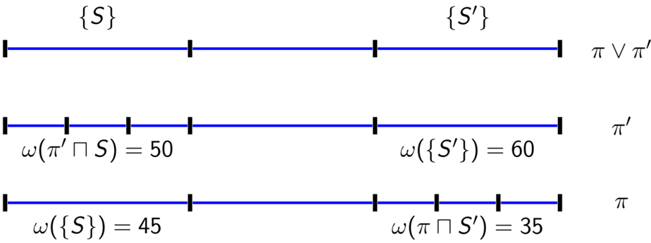
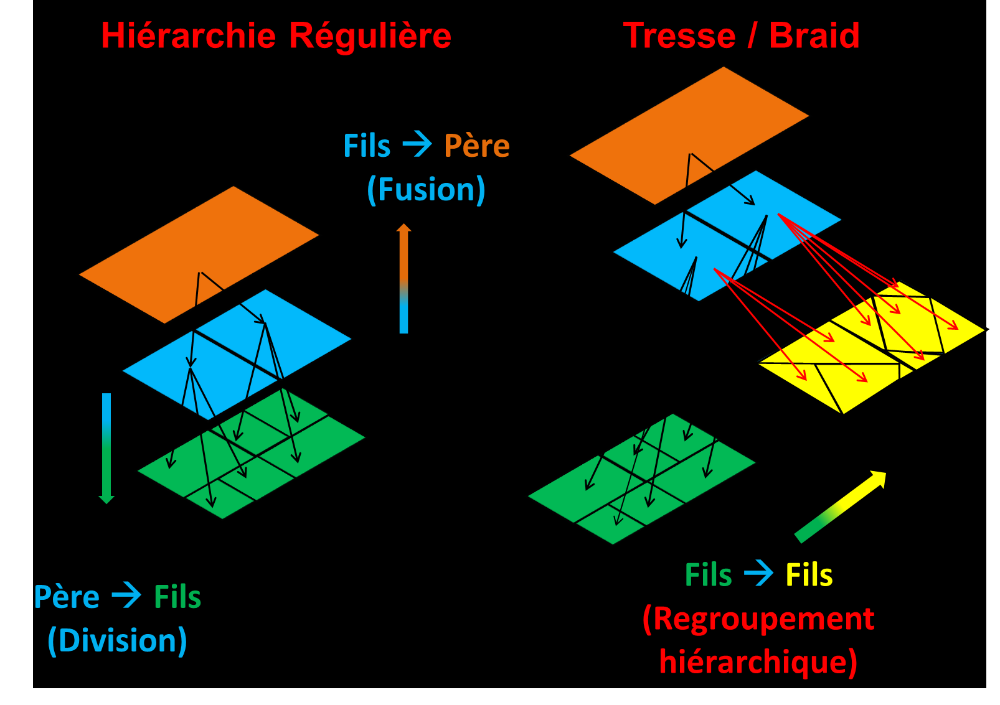
While the braid of partitions consists of a third type of refinement operation, including the fusion and division operations. This is termed as hierarchical reorganization, while mathematically it corresponds to local partitioning that keeps the pairwise supremum partitions a hierarchy of partitions. More particularly, this corresponds to a fusion-division (or division-fusion) operation on the same set of classes in a partition, that produces a new local partitioning of the space. Braids are the largest family over which the dynamic programming substructure is preserved to yield a global optimum.
We can see from the braid structure that it is in accordance with the energetic ordering and also generalizes hierarchical partitioning of the space while preserving the dynamic program's substructure.
Examples of partition families that form braids:
The Ultrametric contour map(UCM) from the berkeley group is an example of a hierarchy. While the Stochastic watershed by Angulo et al. is an example of a braid. There is a total ordering between the partitions in a hierarchy, while there is a partial ordering for partitions belonging to a braid. The supremum partitions of a braid though turn out to be hierarchical. This provides a generalization of the hierarchical structure for the purpose of dynamic programming and search of better solution spaces.Stochastic watershed Braids:
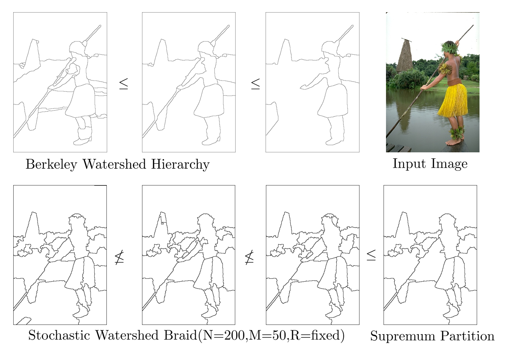
Composition of Attribute watershed hierarchies:
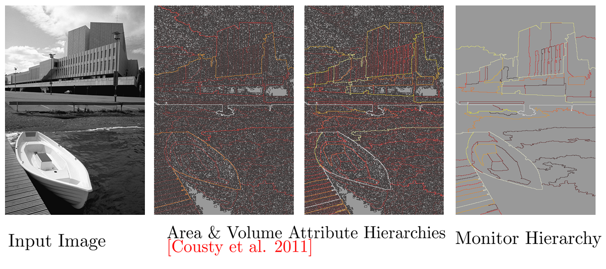
Dynamic programming substructre on Braids:
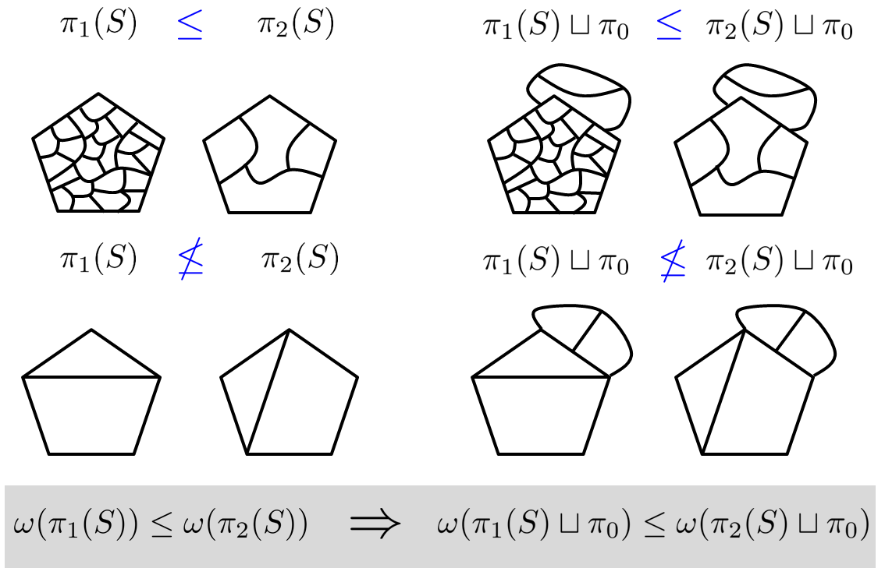
To ensure that one reaches the minimum using previously calculated results over finer partial partitions, we use the hierarchical increasingness property. This ensures the monotonic property of the energy during the bottom-up/top-down scan by the dynamic program. h-increasingness is over partial partitions from a hierarchy and a braid is demonstrated. We see that the braid provides a larger family of partitions over which the dynamic program works. This requires a partial ordering in case of braids.Human annotated & algorithm segmentations match in three different ways (shown below)
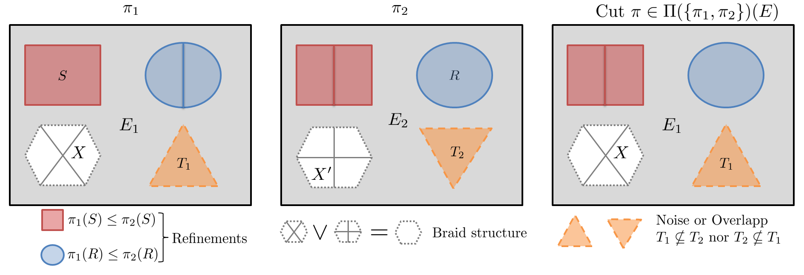
Optimal Cuts from hierarchies of partitions
Preprint : PR journal 2013
Slides : 1. Optimal Cuts & Energetic Lattices , 2. Ground truth energies & evaluation
Keywords : Hierarchical segmentation, MathematicalMorphology, Energy minimization, Dynamic programming
Algorithms :
- Optimal Cut Algorithm : Breimans algorithm to calculate the optimally pruned rooted tree.
- Optimal hierarchy using scale-sets : Complete hierarchy of optimal cuts by ordered by scale function.
- Scale-function is calculated by equating lagrangians of parent and child energies
Intial Image: Optimal Cut (Luminance) Optimal Cut (Chrominance)
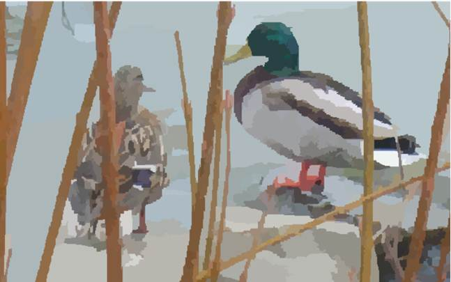
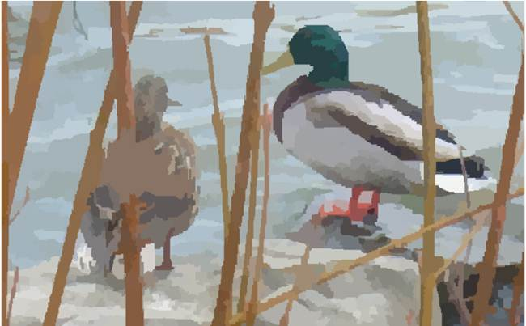
$\omega_{\text{Lum}}(S) = \sum_{x \in S} \|l(x)-\mu(S)\|^2 + \lambda(24 + |\partial S|)$ Fidelity term (Luminance) $\omega_{\text{Chrom}}(S) = \sum_{x \in S, i} \|c_i(x)-\bar{c}_i(S)\|^2 + \lambda(24 + |\partial S|)$ Fidelity term (Chrominance)
Texture Enhancement by including class size unformity term in Mumford Shah Functional:
Mean size of siblings : $\mu_A = \frac{\sum_{S^\prime \in \text{siblings}(S)} |S|}{|\text{siblings}(S)|}$, Texture energy : $\omega_{\text{texture}}(S) = \omega_{\text{Chrom}}(S) + \frac{\nu}{\sum_{S^\prime \in \text{siblings(S)}} |\mu_A-|S^\prime||^2}$
Intial Image: For weak uniformity For strong uniformity:
Related Publications and slides
- Energetic Lattices and braids : Talk at Icube-MIV March 2017, [Slides ]
- Braids Of partitions, B Ravi Kiran, Jean Serra, ISMM 2015.[HAL][Slides][bibtex]
- Constrained Optimization on Hierarchies and Braids, Jean Serra, B Ravi Kiran, ISMM 2015[HAL][Poster]
- Review on braids of partitions : Talk at [CMM] March 2015 [Slides]
- B. Ravi Kiran, Jean Serra, Global local optimizations by hierarchical cuts and climbing energies, In press, Pattern Recognition, Volume 47, Issue 1, January 2014, Pages 12–24. ISSN 0031-3203.
- Optima on Hierarchies of Partitions, J. Serra, B.R. Kiran, ISMM 2013, LNCS, Vol. 7883, pp 147-158
Tutorial on optimization on hierarchies at ICIP 2014
- Jean Serra: Hierarchies and Energetic Lattice [Slides]
- Hugues Talbot: Optimisation in Imaging [Slides]
- B Ravi Kiran: Constrained Optimization on Hierarchies [Slides]
- Jean Cousty: Handling and computing hierarchies with graphs [Slides]
Reading List
- Toward Objective Evaluation of Image Segmentation Algorithms, Unnikrishnan 2007 PAMI
- Segmentation as Maximum-Weight Independent Set, Brendel, Todorovic NIPS 2010
- Ordered Hypothesis Machines Zimmer, Hush, Porter JMIV 2012
- Grain Building Ordering, J. Serra ISMM 2011
- Learning to Merge: A New Tool for Interactive Mapping, Porter SPIE 2013
- Orders on Partial Partitions Based on Block Apportioning, Christian Ronse 2014
- Classification and regression trees. CRC press, 1984, Breiman et al.
- BPT, efficient representation for image segmentation, Image Proc., Transactions 2000, Salembier et al.
- Guigues et al. "Scale-sets image analysis." IJCV 2006
- GloBo : un algorithme stochastique pour l'apprentissage supervisé et non-supervisé [pdf] [VOLATA]
- Convex optimization, Stephen Boyd and Lieven Vandenberghe (2004)
- Level lines selection with variational models for segmentation and encoding. Ballester, C., et al. 2007
- Contour detection and hierarchical image segmentation, Arbelaez, P., et al. 2011
- Supervised assessment of segmentation hierarchies. Pont-Tuset, J. and Marques, F. (2012)
- Fast approximate energy minimization via graph cuts, Boykov, Y., Veksler, O., and Zabih, R. (2001)
- Some links between min-cuts, optimal spanning forests and watersheds, Allene, C., et al. 2007
- Watershed cuts: Thinnings, shortest path forests, and topological watersheds. Cousty. et al. 2010
- Power watersheds: A unifying graph-based optimization framework, Couprie, C., et al .2011
Ground truth energies and Class opening
During the evaluation of ground truth segmentation one problem is the evauation of a numerical measure that determines if the given image segmentation is close to the expert/human drawn ground truth. Given a hierarchy of segmentations one faces the problem of chosing which partition amongst all cuts is closest to a given ground truth. We evaluate a localized haussdorf distance locally for every super-pixel segment belonging to the input hierarchy of segmentations corresponding to the input image, using the ground truth partition contours and their distance functions.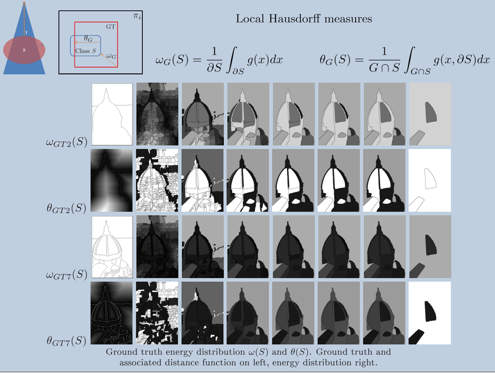
First energy : Maximum distance function value of the contours of the segment over the contour of the ground truth passing within the segment, Second energy : Maximum distance function value of the ground truth contour over the segment contours.
These local energies termed as ground truth energies. These functions are h-increasing. Once, these energies calculated for every segment in the hierarchy, we can extract the partition whose with least value of composition of ground truth energies. The optimal cut extracted here thus corresponds to the partition from the hierarchy of partitions closest locally w.r.t each class, to the input ground truth partition.
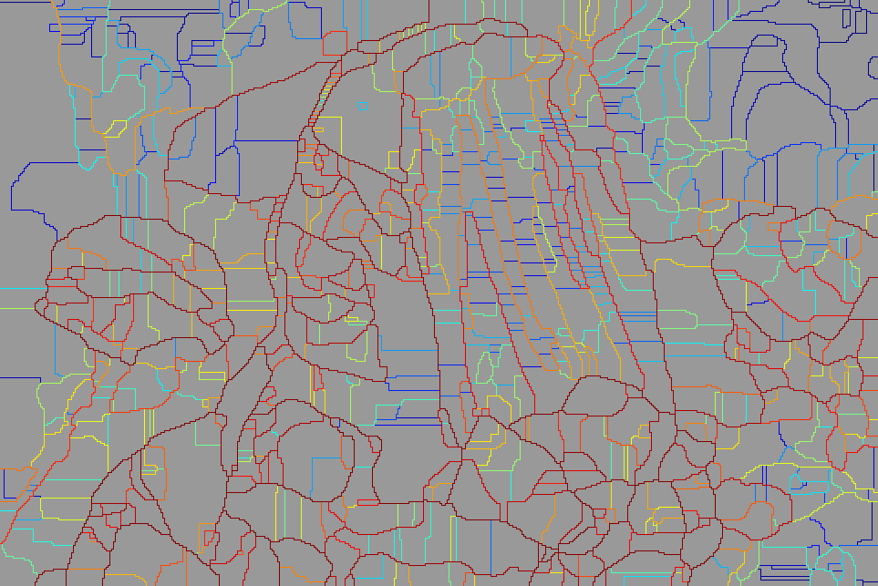
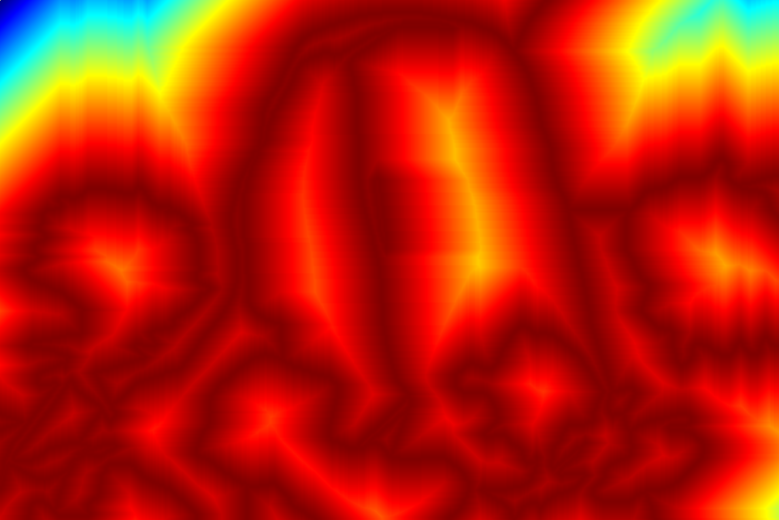
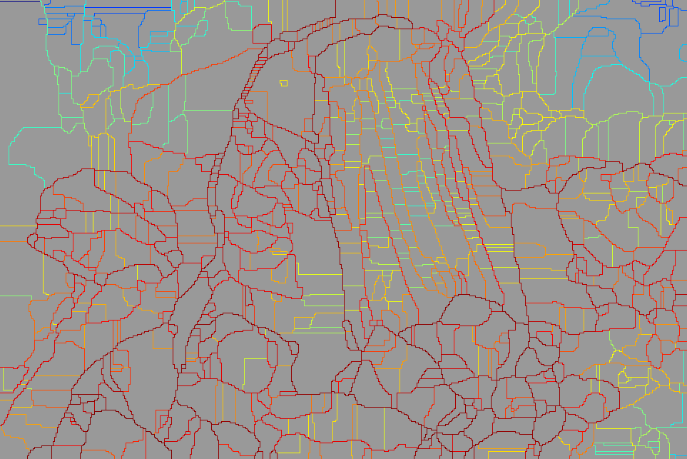
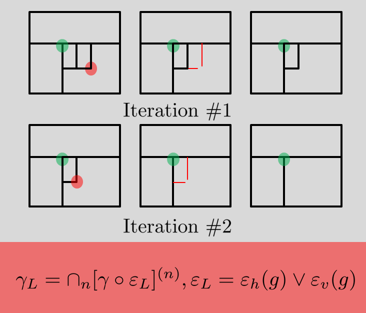
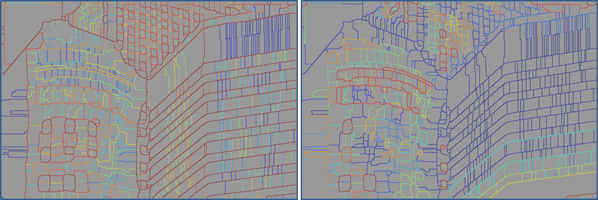
7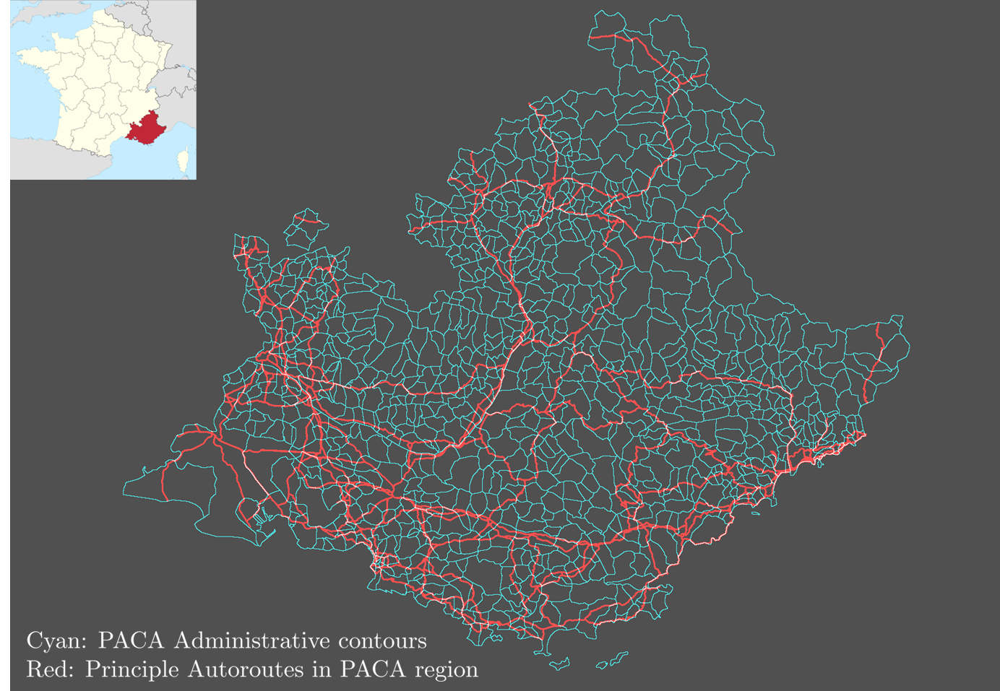
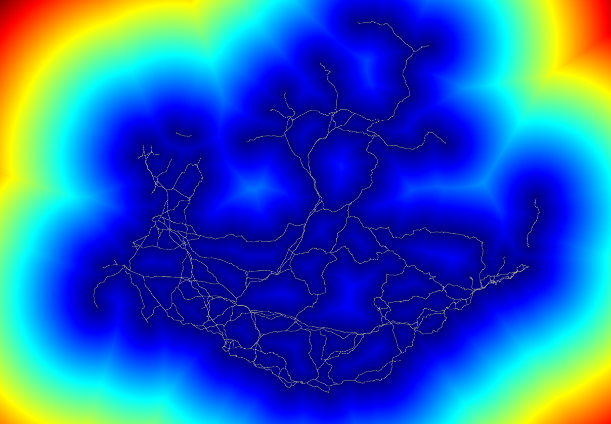
PACA Autoroutes and commune Contours PACA Autoroutes Distance function
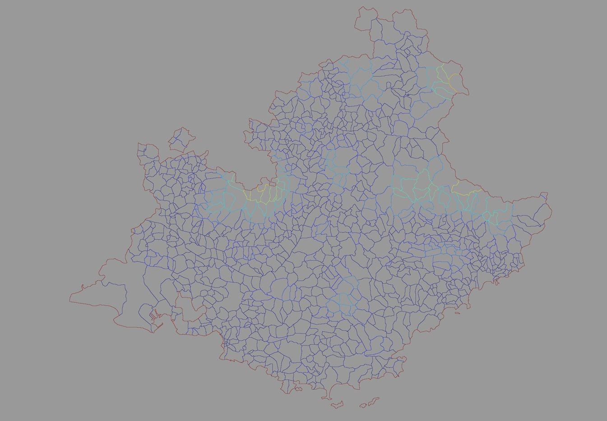
Hierarchy of PACA Communes represented by saliency function on commune Contours
Related Publications
- Scale Space Operators on Hierarchies of Segmentations B Ravi Kiran, Jean Serra SSVM 2013,[PDF]
- Ground truth energies for hierarchies of segmentations B. Ravi Kiran, Jean Serra, ISMM 2013 [PDF]
- Fusions of Ground Truths and of Hierarchies of Segmentations, B Ravi Kiran, Jean Serra, Pattern Recognition Letters 2014.[Link] [ Slides]
References
- Bottom-up Segmentation for Top-down Detection
- Hierarchical Multi-Scale Supervoxel Matching using Random Forests for Automatic Semi-Dense Abdominal Image Registration